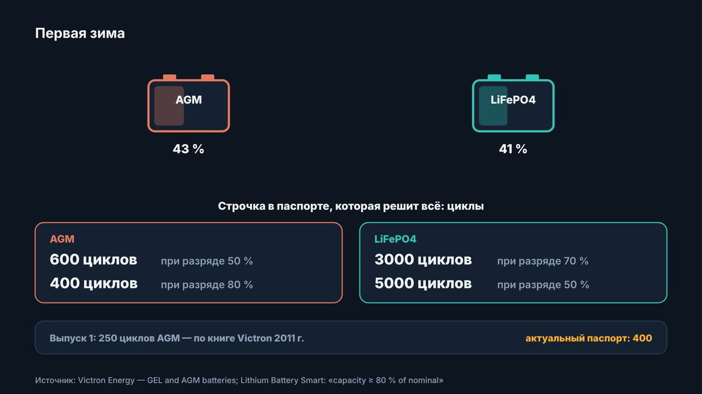
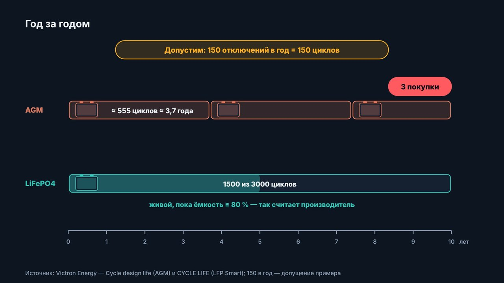
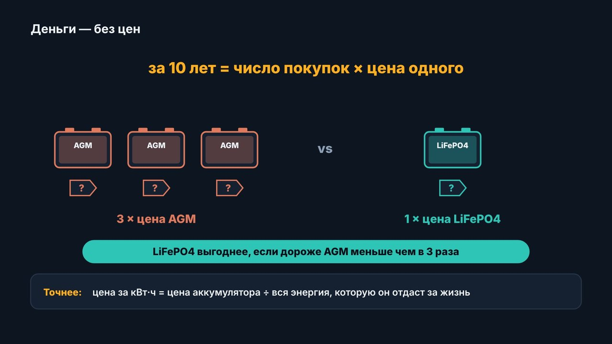

AGM или LiFePO4: какой аккумулятор для инвертора выгоднее за 10 лет
Две соседние квартиры в один день покупают аккумулятор на одно и то же отключение: слева свинцовый AGM, справа литиевый LiFePO4. Соседи вымышленные, цифры — из паспортов Victron. Смотрим, что с ними происходит год за годом, и считаем, кто заплатит меньше.
Ролик, 5:05. Не открывается? Смотреть на YouTube или читайте разбор ниже — в нём всё то же самое.
Впишите, сколько у вас отключений в год и сколько ватт-часов уходит за одно, и цены из своего магазина — калькулятор покажет, на сколько лет хватит каждого аккумулятора и что выгоднее за 10 лет.
Открыть калькуляторДень покупки
Обоим нужно около 750 Вт·ч на одно отключение — так мы посчитали в выпуске 1. Слева — AGM Victron 12 В × 110 А·ч, это 1320 Вт·ч и 32 кг. Справа — LiFePO4 Victron 12,8 В × 100 А·ч: 1280 Вт·ч и 14 кг. На бумаге свинцовый даже больше.

1Циклы по паспорту
Каждое отключение забирает больше половины ёмкости у обоих: 57 % у AGM и 59 % у LiFePO4. Сколько таких циклов выдержит аккумулятор, написано в паспорте. AGM Victron: 600 циклов при разряде на 50 %, 400 — при 80 %, 1500 — при 30 %. LiFePO4 Victron: 2500 циклов при 80 %, 3000 — при 70 %, 5000 — при 50 %, до остаточной ёмкости 80 %. В выпуске 1 мы называли для AGM 250 циклов при 80 % — по книге Victron 2011 года; в актуальном паспорте — 400.

2Свет на пару часов
Когда свет дают ненадолго, свинцовый не успевает зарядиться полностью. Victron пишет, что после примерно 80 % заряда свинцовый заряжается особенно неэффективно, а если его долго не заряжать полностью, он раньше времени выходит из строя из-за сульфатации. Литиевому полный заряд не нужен — по данным Victron, при неполном заряде его срок службы даже немного растёт.

3Мороз и жара
Литиевый Victron отдаёт энергию от −20 °C, а заряжается только от +5 °C: на морозном балконе система защиты не даст ему зарядиться. Свинцовый не любит жару: расчётный срок службы AGM Victron в буферном режиме — 7–10 лет при 20 °C, 4 года при 30 °C и 2 года при 40 °C. Оба — в комнату, подальше от радиатора.

4Год за годом
Допустим, отключений 150 в год — это 150 циклов. AGM при разряде на 57 % выдерживает около 555 циклов (между 600 и 400 по паспорту) — это примерно 3,7 года, за 10 лет придётся купить три аккумулятора. LiFePO4 за 10 лет проходит 1500 циклов — половину из 3000 по паспорту.

Потери на зарядку
По данным Victron, средний свинцовый аккумулятор возвращает около 80 % энергии, которую в него зарядили, литиевый — 92 %. Чтобы вернуть 750 Вт·ч, AGM возьмёт из розетки около 938 Вт·ч, LiFePO4 — около 815 Вт·ч. Разница ≈ 120 Вт·ч на каждую зарядку, за 1500 циклов — около 180 кВт·ч.
5Деньги — без цен
В примере — три AGM против одного LiFePO4: литиевый выгоднее, если дороже AGM меньше чем в три раза. Точнее сравнивать цену за киловатт-час: цену аккумулятора делим на всю энергию, которую он отдаст за жизнь. При редких отключениях циклы почти не тратятся, и решают годы: AGM рассчитан на 7–10 лет при 20 °C. При частых — циклы у свинцового закончатся раньше, чем годы.

Чек-лист
- Сколько отключений в год и сколько Вт·ч уходит за одно.
- Число циклов в паспорте — при вашей глубине разряда.
- Циклы ÷ отключения в год = на сколько лет хватит; у AGM не больше расчётного срока службы.
- Число покупок за 10 лет × цена.
- LiFePO4 — не на мороз, AGM — не в жару.
Источники
- Victron Energy (Нидерланды) — паспорт 12,8 & 25,6 Volt lithium iron phosphate batteries Smart: 1280 Вт·ч, 14 кг, циклы 2500/3000/5000 при 80/70/50 %, заряд от +5 °C, разряд от −20 °C, КПД цикла 92 % против 80 % у свинцового, сульфатация, неполный заряд.
- Victron Energy — Lithium Battery Smart, технические данные.
- Victron Energy — паспорт GEL and AGM batteries: AGM 12 В 110 А·ч — 32 кг; циклы 400/600/1500 при 80/50/30 %; срок 7–10 / 4 / 2 года при 20 / 30 / 40 °C.
Проверено 15 ноября 2026 г. Нашли ошибку — напишите в комментариях под роликом.